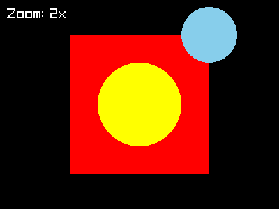
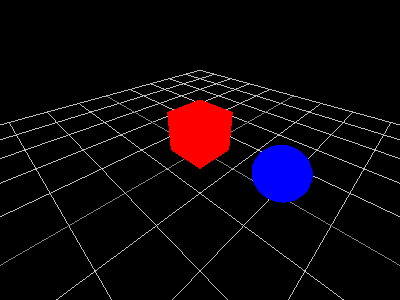
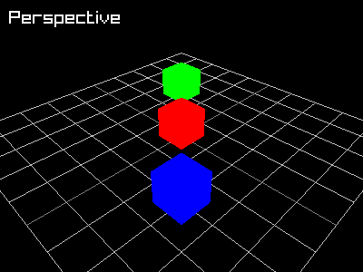
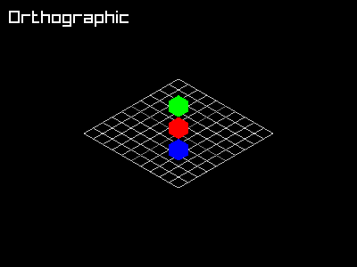

raylibr provides both 2D and 3D camera systems. A camera transforms world coordinates into screen coordinates, letting you pan, zoom, and rotate your view of the scene.
2D camera
camera_2d() creates a 2D camera with four
properties:
- offset — where the target appears on screen (in pixels)
- target — the world position to look at
- rotation — angle in degrees
- zoom — magnification factor (1.0 = normal)
Wrap your drawing calls in begin_mode_2d() /
end_mode_2d() to apply the camera transform. Anything drawn
outside this block uses screen coordinates directly — useful for HUD
elements.
raylibr_screenshot(function() {
cam <- camera_2d(c(200, 150), c(100, 100), rotation = 0, zoom = 2)
begin_mode_2d(cam)
draw_rectangle(50L, 50L, 100L, 100L, "red")
draw_circle(100L, 100L, 30.0, "yellow")
draw_circle(150L, 50L, 20.0, "skyblue")
end_mode_2d()
draw_text("Zoom: 2x", 10L, 10L, 20L, "white")
})
The rectangle and circles are drawn in world coordinates. The camera
zooms in 2x and centers on (100, 100), so they appear
magnified. The text is drawn outside the camera block, so it stays fixed
on screen.
3D camera
camera_3d() sets up a 3D perspective view:
cam <- camera_3d(
position = c(4, 4, 4), # where the camera is
target = c(0, 0, 0), # what it looks at
up = c(0, 1, 0), # which direction is "up"
fovy = 70, # vertical field of view in degrees
projection = camera_projection$perspective
)All parameters except position have sensible defaults.
Wrap 3D drawing in begin_mode_3d() /
end_mode_3d():
raylibr_screenshot(function() {
cam <- camera_3d(c(3, 3, 3))
begin_mode_3d(cam)
draw_grid(10L, 1.0)
draw_cube(c(0, 0.5, 0), 1, 1, 1, "red")
draw_sphere(c(2, 0.5, 0), 0.5, "blue")
end_mode_3d()
})
The helper raylibr_screenshot_3d() provides a shortcut —
it sets up a camera at c(4, 4, 4), draws a grid, and wraps
your drawing function automatically.
Perspective vs orthographic
Perspective projection makes distant objects appear smaller (like real life). Orthographic projection preserves parallel lines and sizes regardless of distance — useful for technical or isometric views.
raylibr_screenshot(function() {
cam <- camera_3d(c(6, 6, 6), fovy = 45,
projection = camera_projection$perspective)
begin_mode_3d(cam)
draw_grid(10L, 1.0)
draw_cube(c(0, 0.5, 0), 1, 1, 1, "red")
draw_cube(c(2, 0.5, 2), 1, 1, 1, "blue")
draw_cube(c(-2, 0.5, -2), 1, 1, 1, "green")
end_mode_3d()
draw_text("Perspective", 10L, 10L, 20L, "white")
})
raylibr_screenshot(function() {
cam <- camera_3d(c(6, 6, 6), fovy = 20,
projection = camera_projection$orthographic)
begin_mode_3d(cam)
draw_grid(10L, 1.0)
draw_cube(c(0, 0.5, 0), 1, 1, 1, "red")
draw_cube(c(2, 0.5, 2), 1, 1, 1, "blue")
draw_cube(c(-2, 0.5, -2), 1, 1, 1, "green")
end_mode_3d()
draw_text("Orthographic", 10L, 10L, 20L, "white")
})
Built-in camera modes
For interactive applications, update_camera() provides
four built-in control schemes:
cam <- camera_3d(c(10, 10, 10))
# In the game loop:
update_camera(cam, camera_mode$free) # WASD + mouse look
update_camera(cam, camera_mode$orbital) # orbit around target
update_camera(cam, camera_mode$first_person) # FPS-style controls
update_camera(cam, camera_mode$third_person) # follow behind targetupdate_camera() modifies the camera in place — no need
to reassign.
Manual camera control
For custom camera behavior, use the individual control functions:
camera_move_forward(cam, distance = 1.0, move_in_world_plane = TRUE)
camera_move_right(cam, distance = 1.0, move_in_world_plane = TRUE)
camera_move_up(cam, distance = 1.0)
camera_move_to_target(cam, delta = -2.0) # negative = zoom in
camera_yaw(cam, angle = 0.1, rotate_around_target = TRUE)
camera_pitch(cam, angle = 0.1, lock_view = TRUE,
rotate_around_target = TRUE, rotate_up = FALSE)
camera_roll(cam, angle = 0.1)All of these modify the camera in place.
Coordinate conversion
Convert between screen and world coordinates:
-
get_screen_to_world_2d(position, camera)— screen pixel → 2D world position -
get_world_to_screen(position, camera)— 3D world position → screen pixel -
get_world_to_screen_2d(position, camera)— 2D world position → screen pixel -
get_screen_to_world_ray(position, camera)— screen pixel → 3D ray (for picking/clicking on 3D objects)
These are essential for mouse interaction — convert the mouse position to world coordinates, then check for collisions or interactions in world space.